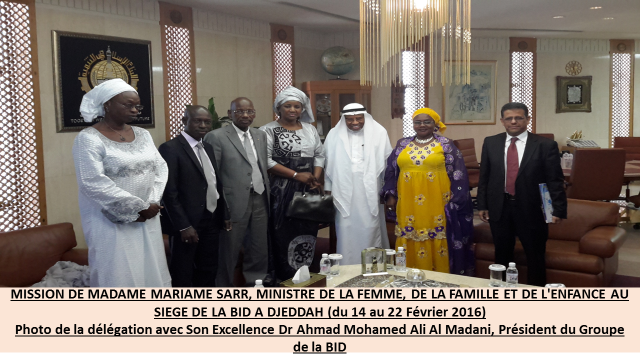

Le PALAM est en cohérence avec le Plan Sénégal Emergent (PSE) articulé autour des trois axes suivants :
- Transformation structurelle de l'économie et croissance (création de richesses),
- Capital Humain, protection sociale et développement durable,
- Gouvernance, institution paix et sécurité
Cette cohérence doit permettre de s'inscrire davantage dans une approche holistique en renforçant la complémentarité et la synergie d'actions avec des programmes du PSE comme le PUDC et d'autres programmes similaires de la BID ou d'autres partenaires techniques et financiers pour une plus grande efficience.
Cette approche intersectorielle des initiatives permettra une meilleure prise en charge des problématiques de développement notamment l'accès à l'énergie, l'hydraulique rurale, la réalisation de pistes rurales, la fourniture d'équipements d'allègement aux femmes, les infrastructures socioéconomiques de base.
C'est dans cet esprit que doit s'inscrire le PALAM 2 dont la BID a déjà inscrit dans son pipeline 2016 pour un montant de 12 milliards de FCFA. A l'occasion de la visite officielle de Madame Mariama SARR, Ministre de la Femme, de la Famille et de l'Enfance effectuée au siège de la BID à Djeddah du 14 au 22 février 2016, il a été de retenu de procéder, avant la mission de préparation de la phase 2 du PALAM prévue en mai 2016, à l'identification des autres régions d'intervention sur la base des critères de sélection retenus mettant l'accent sur les zones les plus touchées par la pauvreté
En outre, le PALAM 2 devrait des problématiques actuelles à savoir, entre autres :
- Comment prendre en compte la dimension liée au développement durable et aux changements climatiques ?
- Comment régler l'absence d'infrastructures polyvalentes en milieu rural ?
- Comment renforcer la responsabilisation des autorités et des collectivités locales dans les zones d'intervention du programme en vue de consolider les concertations communautaires et la pérennisation des acquis ?
- Comment amener tous les acteurs de développement à travailler en synergie et à rationaliser les ressources pour une meilleure prise en charge de l'autonomisation socio-économique des groupes vulnérables ?...
